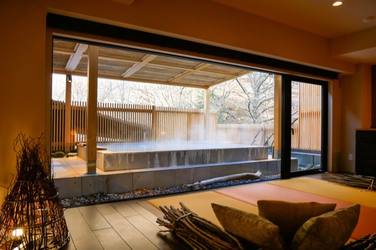
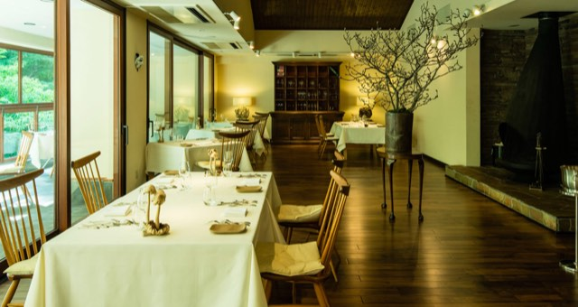
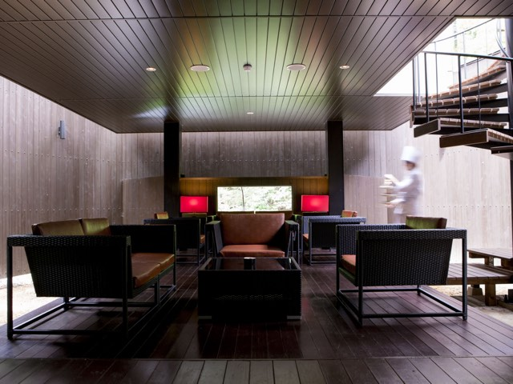
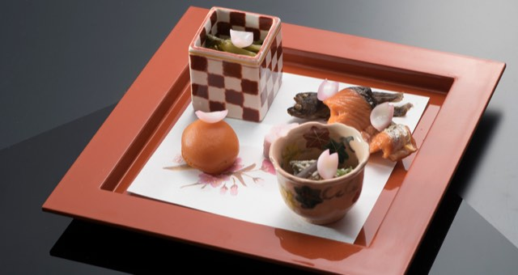
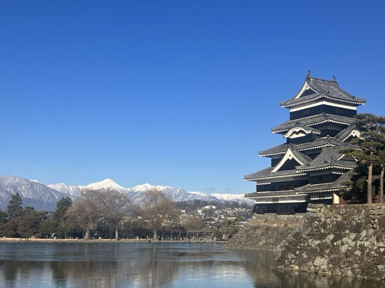
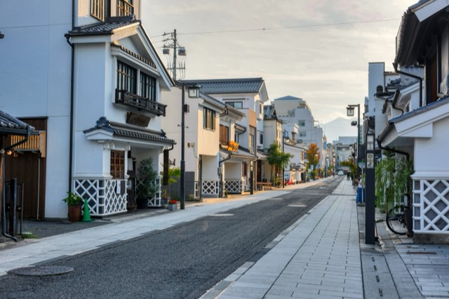
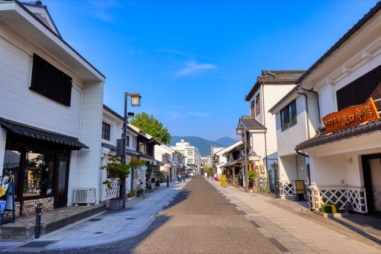
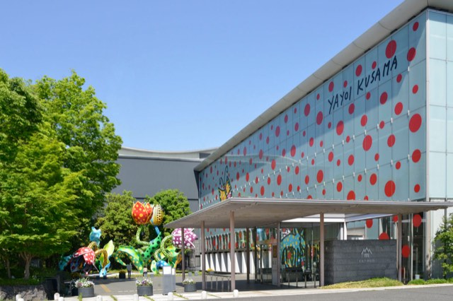

1. exterior The arrival marker at dusk: a carved timber name board reading 親湯 明神館 under its own small shingled gate roof, uplit and set into a bank of ferns and shrubs above a stone kerb, with the ryokan's dark vertical-timber wall rising behind and a paper lantern glowing at the edge of the drive.1600×8842. exterior Daytime at the entrance: the property's dark-green Toyota shuttle van lettered TOBIRA MYOJINKAN standing on the drive in front of the black timber-clad building, beside the stone name marker under its timber gate, hemmed in by forest. This is the van that runs the free 35-45 minute transfer from Matsumoto station.1600×5713. setting Autumn on the Tobira river below the ryokan — backlit yellow and orange maple leaves on bare black branches, with the stream breaking white over rocks in the blurred background. The nearest thing in the official library to the late-November look of the valley.1600×5714. setting The outdoor terrace at night: a gas fire pit burning in a low stone-clad table, ringed by dark wicker sofas with cream cushions on a timber deck, with the surrounding forest canopy uplit overhead. Shot in leaf, so summer.1600×8525. room A Japanese-style guest room: tatami floor with a long black-lacquer low table and legless zaisu chairs, timber-coffered ceiling and a woven bamboo pendant lamp, shoji screens drawn back to a balcony room laid with a red carpet and two armchairs, opening onto the wooded slope opposite.1600×8526. room Otakato Japanese-style room (お鷹棟 和室): tatami with a black low table, four zabuton and zaisu chairs, reed-screen doors folded back to a timber-floored sitting bay with a spindle-back sofa and a paper globe floor lamp facing a picture window of green forest; folded yukata laid out on red cloth at the right.1600×10687. room A Western-style room: twin beds pushed together beneath a backlit straw-flecked plaster panel framed in pale timber, on a wide cedar plank floor, with glass pendant reading lamps, a live-edge slab artwork on the left wall and a carved timber bench holding rolled towels and robes on the right.1600×12008. bath The standing bath "Setsugekka" (立ち湯 雪月花) — the ryokan's signature bath. A broad, mirror-still pool under a timber-boarded ceiling whose far wall is a full-width open frame straight onto the forest, so the water reads as a green mirror of the maples. Shot in full summer leaf.1600×10009. bath The large communal bath "Hakuryu" (露天風呂付き大浴場 白龍): an octagonal stone-rimmed tub sunk into a dark tiled floor under a ribbed timber ceiling, with glass walls onto the open-air section beyond — a stone-edged rotenburo backed by a rock face and conifers. Washing stations along the right-hand wall.1600×1000

10. bath A Zen-wing suite's private open-air hot-spring bath: a large concrete-edged tub steaming on a stone terrace under a slatted timber pergola, screened by a vertical timber fence, with the hillside beyond in bare branches — this is the late-autumn/winter look, the season the trip arrives in. Inside, a raised tatami platform with cushions and a bundle of branches.1600×1066

11. dining Nature French 菜 (SAI), the French restaurant: white-clothed tables with spindle-back timber chairs and cream seat cushions under a dark boarded vaulted ceiling, a glazed antique wine dresser at the back, a bare-branch arrangement in a bronze vessel, a black conical fireplace at right and a full glass wall onto the terrace and greenery at left.1600×852

12. dining Salon 1050, the café and bar: a cedar-clad double-height room opening onto a dark timber deck, furnished with black woven armchairs and tan leather cushions around low tables, red shaded lamps flanking a long window onto the forest, and an open spiral stair. A member of kitchen staff in whites crosses the frame carrying a tiered stand.1600×1200

13. food A kaiseki course laid on a vermilion lacquer tray over a black table: a checkerboard-glazed square cup of dressed greens, a persimmon-coloured sphere, a small painted cup of dressed vegetables, and grilled salmon with a whole dried fish, all on cherry-blossom-printed paper and scattered with cherry petals. Japanese plating, spring styling.1600×85214. food Grilled beef on a vermilion lacquer plate: a glazed slab of beef and a rolled beef parcel around a pale core, laid under a long strip of grilled burdock root, with a scorched baton of daikon and a sprig of nandina. Japanese plating.1600×85215. food A vegetable terrine from the French kitchen: a long bar of vegetables pressed in visible layers — beetroot red, carrot orange, yellow, courgette and leek green — set on a white plate with pale mousse quenelles, a cream sauce, slivers of green bean and micro-leaves. Vegetable-led Western plating.1600×85216. food An all-green vegetable plate from the French kitchen: mangetout, asparagus tips, broad beans, frisée and purslane piled on a wide white plate over a scatter of dark crumb and dots of green herb oil. The clearest single image of the organic, vegetable-forward cooking the kitchen is known for.1600×852
matsumoto Matsumoto · place · 6 photos
coverage ok

1. setting Matsumoto Castle across the moat under a cloudless cobalt sky, with the snow-covered Northern Alps running along the whole left horizon and the willows on the far bank stripped bare. The black-and-white keep sits at right on its stone base, reflected in still water. This is the cold-season look — bare trees, snow on the peaks — and the closest match in the official library to how the castle will read on a clear day in late November.1600×12002. setting The classic view: the vermilion-railed timber bridge arcing over the moat in the foreground, the jet-black keep and its adjoining turrets behind on their stone rampart, and forested hills on the horizon at right. Clear day, high cloud, summer foliage.1600×10683. setting The whole castle at twilight, floodlit against a violet sky and mirrored full-length in the flat black water of the moat, with the red bridge visible small at the left edge and mountains on the far right horizon.1600×1274

4. setting Nakamachi Street in low golden light: white plastered kura storehouses with black-tiled roofs down both sides, their lower walls in the black-and-white namako lattice plasterwork the street is known for, timber shop signs and lantern-headed streetlamps, and the street running away empty toward hills at the far end. One tree mid-frame has turned autumn orange.1600×1067

5. setting Nakamachi Street from street level under a deep blue sky — two facing rows of white kura storehouses with heavy grey-tiled roofs, black shuttered upper windows and white lattice namako bases, a carved gilt shop signboard on the right, a few people walking, and a green mountain closing the view at the end of the street.1600×1067

6. detail Matsumoto City Museum of Art: the long glazed street facade scattered with large red polka dots and signed YAYOI KUSAMA in the artist's handwriting, with her monumental tulip sculpture 'Phantom Flower' (2002) — spotted red, magenta, green and blue blooms on curling stems — standing in the forecourt beside the timber entrance canopy. Kusama was born in Matsumoto.1600×1066